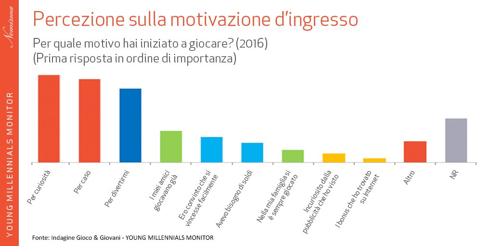
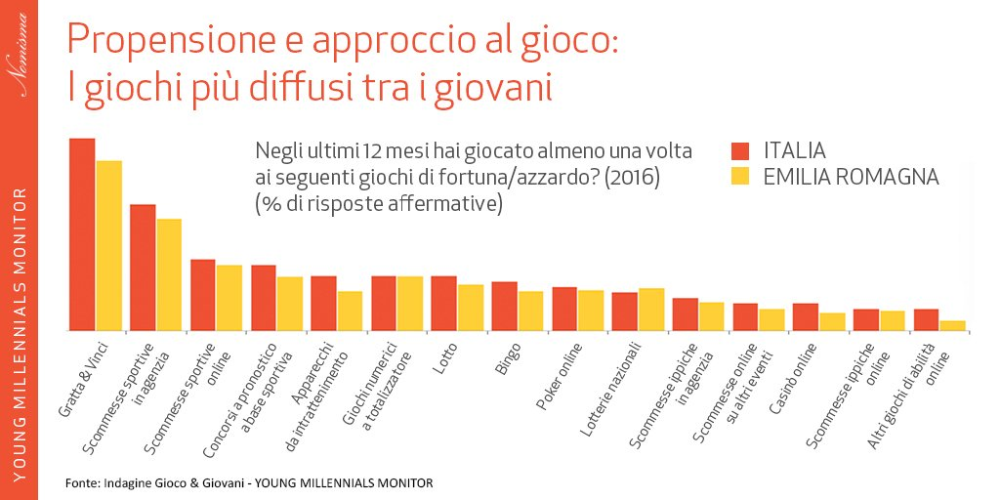

CHI SIAMO
"AiutoGioco" è Associazione senza fini di lucro che ha lo scopo di offrire un opportunità di ascolto e di aiuto a persone che manifestano una dipendenza dal gioco d' azzardo.
Quest'associazione collabora attivamente con il Ser.T. di Ferrara (Servizio Dipendenze Patologiche) al fine di arricchire le possibilità di aiuto alle persone che contatteranno l'associazione. Le due attività sono complementari, ci si può iscrivere all'associazione e non essere in trattamento, ognuno è libero di scegliere il percorso che preferisce.
Scopi dell'Associazione tratti dallo statuto sono:
- supporto ai giocatori e ai familiari attraverso colloqui, informazioni e orientamento;
- formazione e consulenze sulle problematiche relative al gioco d'azzardo;
- invio ai servizi pubblici presenti sul territorio.
I FATTORI CHE SPINGONO A GIOCARE
Si tratta di strategie che fanno pressione sul sistema neurologico della persona, alterando i sistemi di neuroni per aumentare la gratificazione. Lo chiamano gioco d’azzardo, ma di gioco c’è veramente poco. Due parole che accostate non possono che attirare la nostra mente fragile, a volte semplicemente curiosa. Il gioco, perché dicono che “non si deve mai smettere di giocare” e l’azzardo, perché bisogna “osare sempre”. Una vera e propria mistificazione che, presentata nel modo giusto, magari impacchettata come la soluzione vincente “a tutti i nostri problemi” può trascinarci in un vero e proprio inferno. L’inferno delle vittime, giocatori patologici d’azzardo. Spesso si crede che i giocatori d’azzardo siano un piccolo gruppo di persone particolarmente vulnerabili, che passano intere giornate davanti alle slot machine di un bar. Ma non è così. Giocatore d’azzardo è colui, colei, che non può fare a meno di “tentare la sorte”, pensando di non commettere nulla di male “perché d’azzardo non si muore”. In realtà dentro ci si logora, fuori si perdono gli affetti, si perdono le cose più care.
Il vizio del gioco d’azzardo è una vera e propria patologia psicologia che ha portato tante persone a rovinarsi e a perdere tutto, dai soldi alle relazioni alla famiglia. Per saperne di più su come abbandonare il vizio del gioco e a chi rivolgersi per chiedere aiuto continua a leggere questa guida. Dal vizio del gioco di azzardo si può uscire, ma sono necessari aiuto esterno da parte di specialisti e conoscenza del problema.

I TIPI DI GIOCO
Il gioco d'azzardo, secondo l'ordinamento penale italiano, è una tipologia di gioco nel quale ricorre il fine di lucro e la vincita o perdita è completamente o quasi aleatoria[1]. Esso consiste nello scommettere beni, perlopiù denaro, sull'esito di un evento futuro: per tradizione le quote si pagano in contanti.
CI sono moltissimi tipi di gioco come : il casino, le scommesse, la lotteria , la roulette ecc...

TEST DIPENDENZA